Wrestler
Cody Rhodes
News, storie e pronostici su Cody Rhodes, in italiano.
Tutto quello che ho scritto su Cody Rhodes: notizie, analisi e pronostici in italiano, dal più recente. La pagina si aggiorna da sola a ogni nuovo articolo.
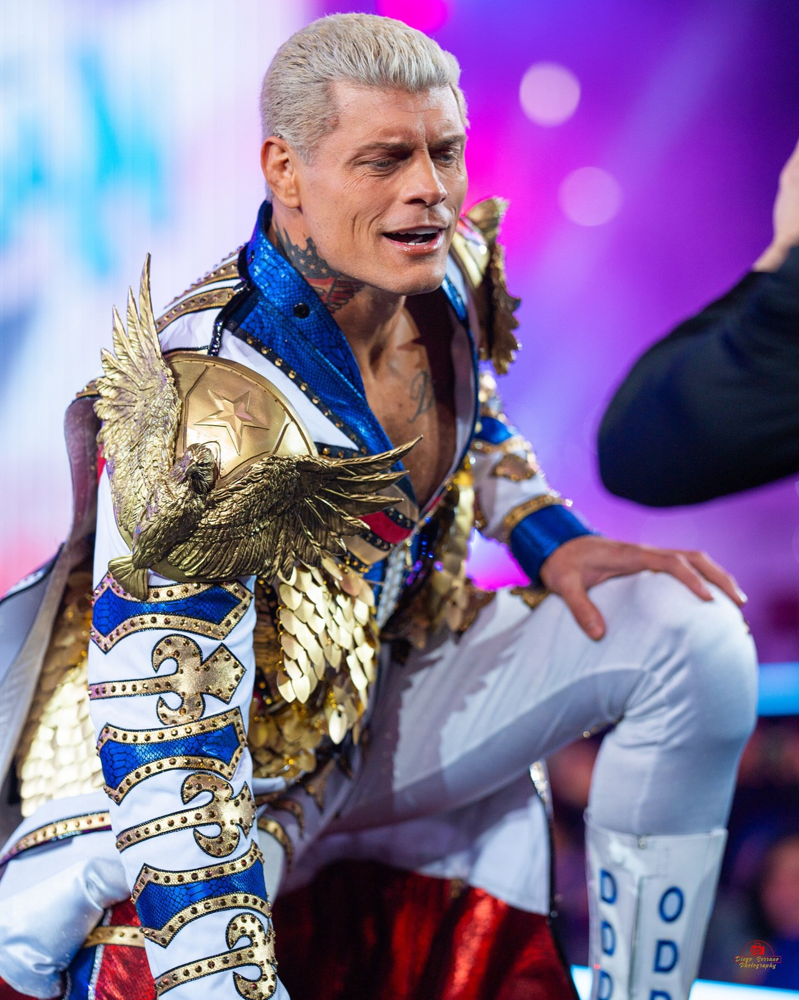
Cody Rhodes: «Ho firmato il mio ultimo contratto». Altri 6-7 anni in WWEFlash News23 ottobre 20263 min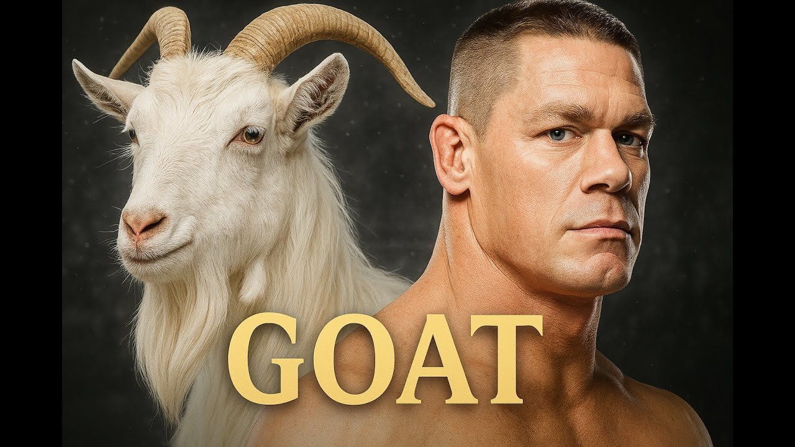
Come John Cena è diventato il più grande di sempre: da Kurt Angle all'ultimo matchLo sapevi che23 ottobre 20264 min- Raw del 2 novembre a mezzanotte in Italia: anticipa di due ore, è già nel palinsesto NetflixFlash News23 ottobre 20262 min
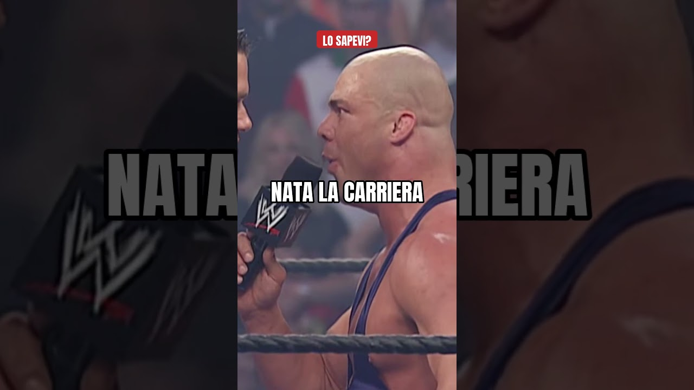
Il debutto di John Cena: la sconfitta contro Kurt Angle nel 2002Flash News22 ottobre 20263 min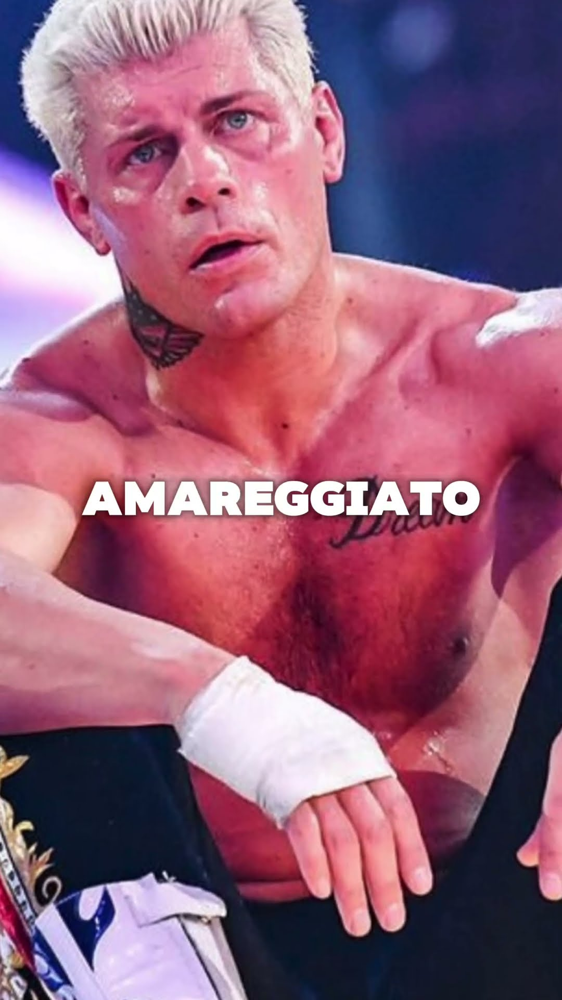
Cody Rhodes dopo la sconfitta con John Cena a WrestleMania 41: com'è andata e cosa è successo dopoFlash News21 ottobre 20263 min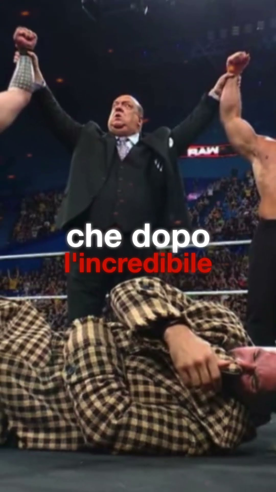
Il tradimento della Vision a Seth Rollins: il vero motivo era l'infortunioFlash News21 ottobre 20263 min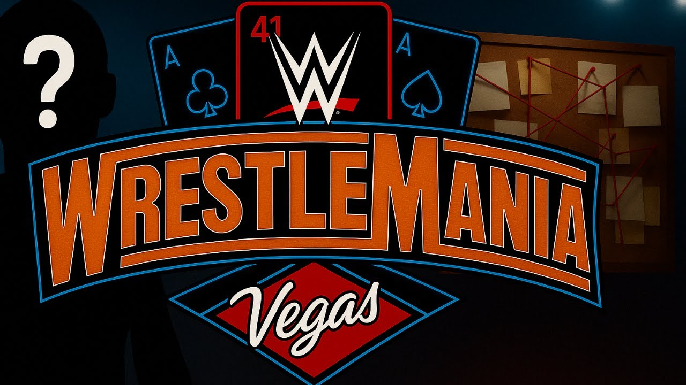
Le teorie folli su WrestleMania 41: quali ci hanno preso e quali noLo sapevi che21 ottobre 20265 min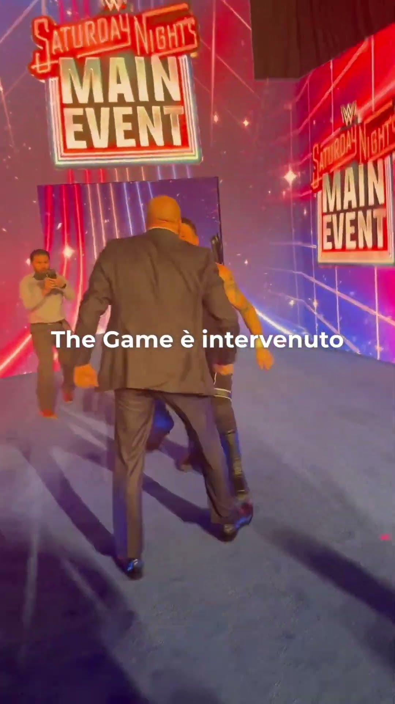
Triple H contro Kevin Owens: cosa successe dopo Saturday Night's Main Event 2024Lo sapevi che21 ottobre 20263 min La vera storia di Cody Rhodes: da licenziato a volto della WWELa vera storia di…21 ottobre 20265 min
La vera storia di Cody Rhodes: da licenziato a volto della WWELa vera storia di…21 ottobre 20265 min La vera storia di Roman Reigns: dal niente a Tribal Chief (e di nuovo campione)La vera storia di…21 ottobre 20265 min
La vera storia di Roman Reigns: dal niente a Tribal Chief (e di nuovo campione)La vera storia di…21 ottobre 20265 min Cody Rhodes diventa cattivo? I 3 segnali del turn heel dopo il punt a CorbinPronostici20 ottobre 20263 min
Cody Rhodes diventa cattivo? I 3 segnali del turn heel dopo il punt a CorbinPronostici20 ottobre 20263 min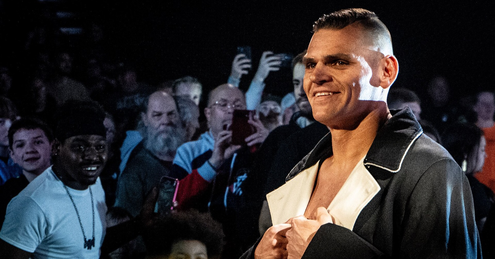
Gunther è sprecato? Dal ritiro di AJ Styles ai siparietti con DanhausenFlash News20 ottobre 20264 min Alessio Marsadri (Alex Fiery): chi è il creator di wrestling di TikTok, la mia intervistaThe Showcase20 ottobre 20265 min
Alessio Marsadri (Alex Fiery): chi è il creator di wrestling di TikTok, la mia intervistaThe Showcase20 ottobre 20265 min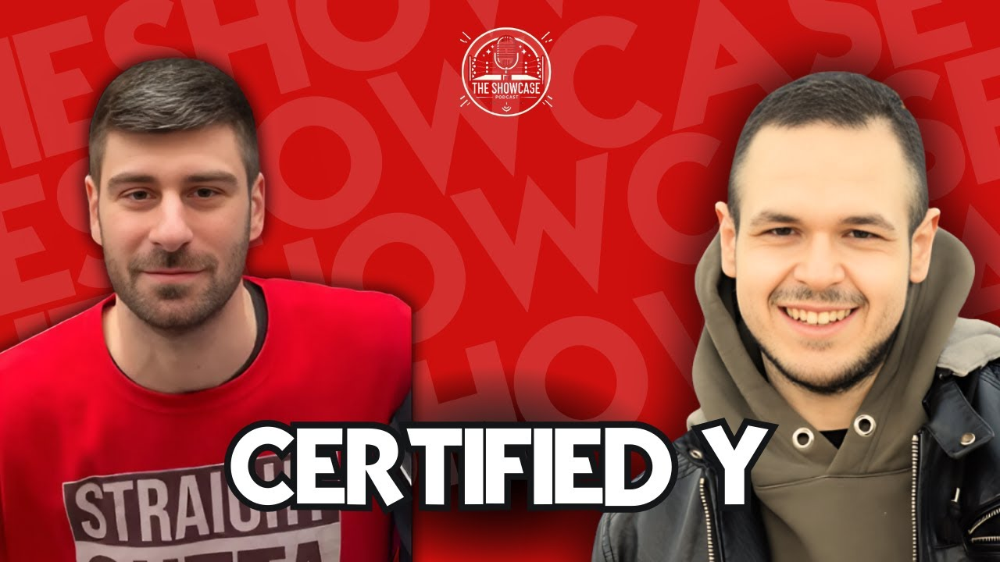
CertifiedY: chi è e cosa mi ha raccontato a The ShowcaseThe Showcase20 ottobre 20265 min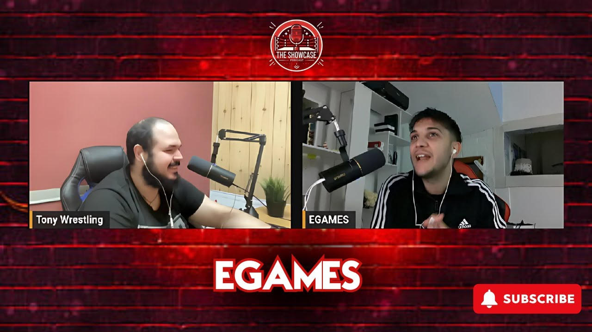
Egames: chi è il creator e cosa mi ha raccontato a The ShowcaseThe Showcase20 ottobre 20264 min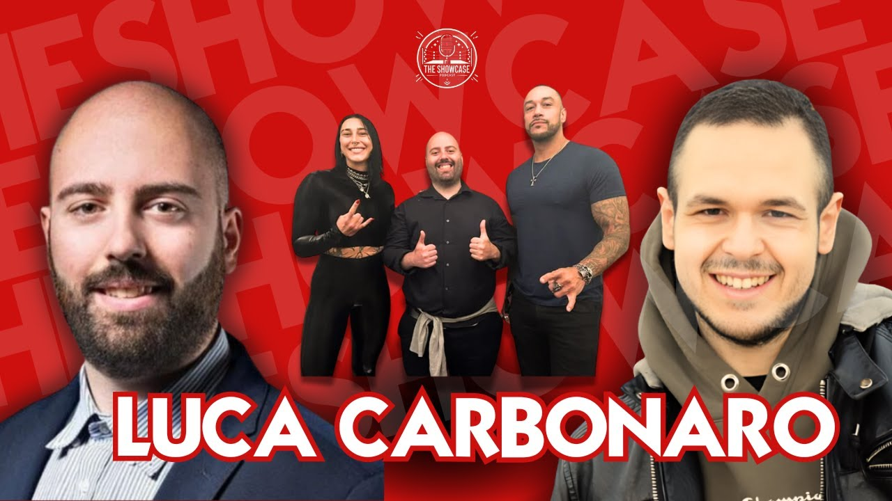
Luca Carbonaro: chi è il giornalista che ha chiesto a Triple H un PLE in ItaliaThe Showcase20 ottobre 20265 min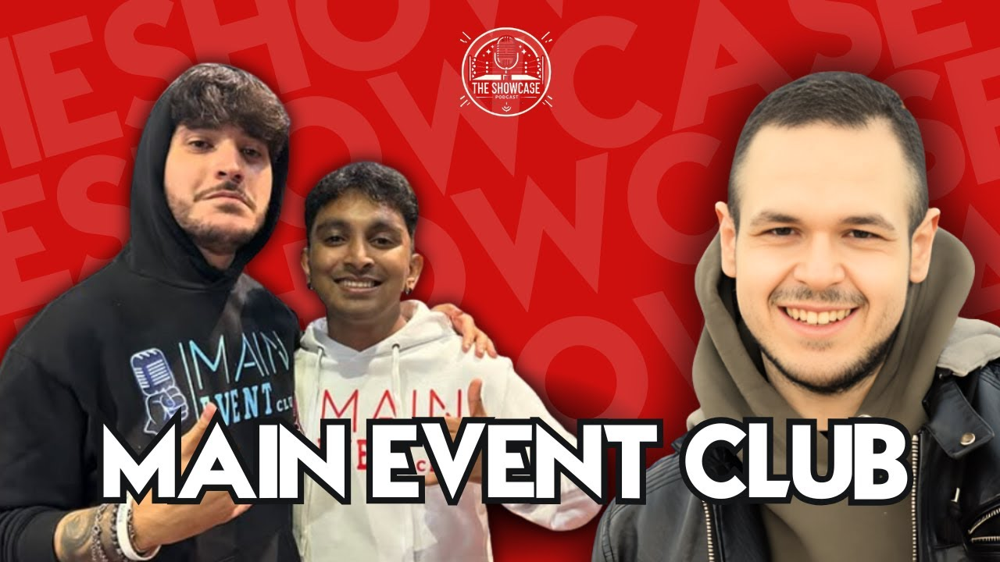
Main Event Club: chi sono Leo e Isu, i creator di wrestling e WWE 2KThe Showcase20 ottobre 20264 min The Wrestler Trip: Davide e la vita da aspirante wrestlerThe Showcase20 ottobre 20264 min
The Wrestler Trip: Davide e la vita da aspirante wrestlerThe Showcase20 ottobre 20264 min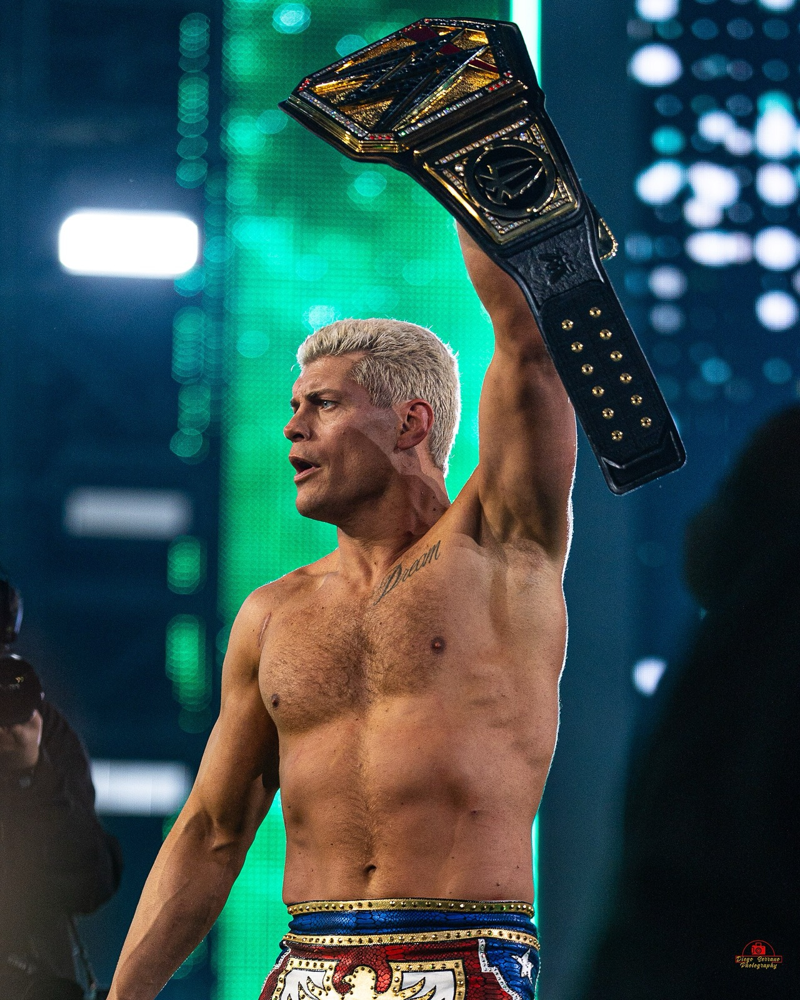
Cody Rhodes tira il punt kick a Baron Corbin davanti a Randy OrtonFlash News17 ottobre 20264 min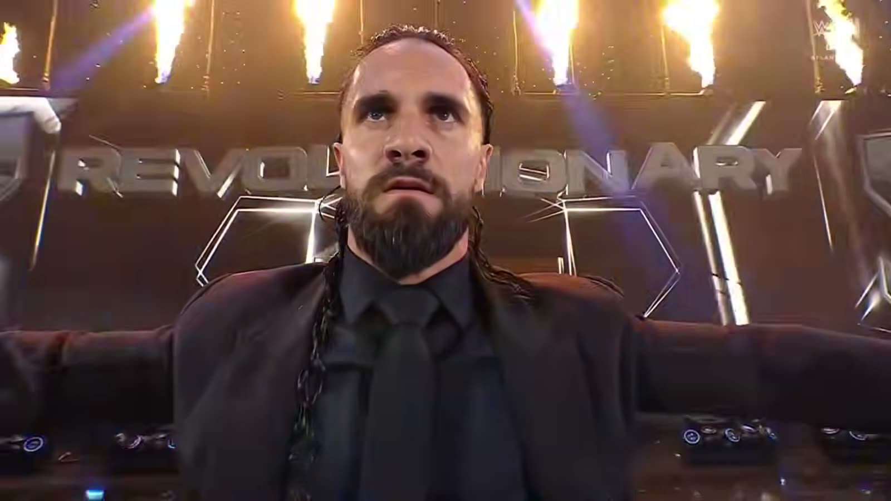
Seth Rollins è sparito: cosa sta succedendo davveroFlash News14 ottobre 20262 min